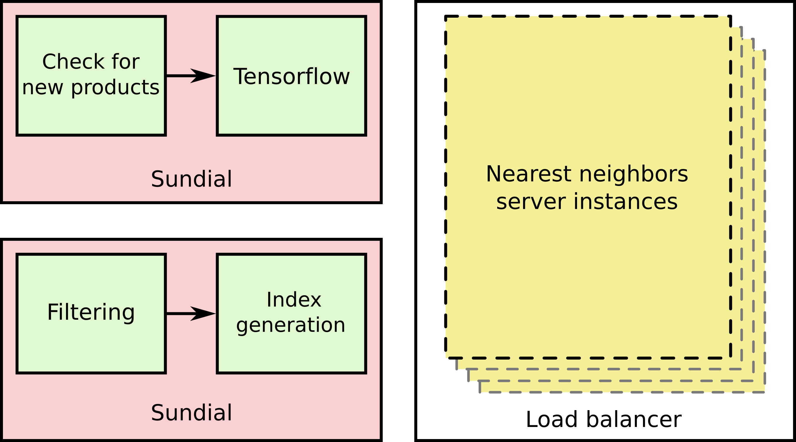

Previously we’ve written about about Tiefvision , a technical demo showcasing the ability to automatically find similar dresses to a particular one of interest. For example:
Since then, we’ve worked on taking the ideas at play in Tiefvision, and making them usable in a production scalable way, that allows us to roll out to new product categories besides dresses quickly and efficiently. Today, we’re excited to announce that we’ve rolled out visually similar recommendations on Gilt for all dresses, t-shirts, and handbags, as well as to women’s shoes, women’s denim, women’s pants, and men’s outerwear.
Let’s start with a brief overview. Consider the general task at hand. We have a landing page for every product on our online stores. For the Gilt store, we refer to this as the product detail page (PDP). On the PDP we would like to offer the user a variety of alternatives to the product they are looking at, so that they can best make a purchasing decision. There exist a variety of approaches to selecting other products to display as alternatives; a particularly popular approach is called collaborative filtering which leverages purchase history across users to make recommendations. However this approach is what we call content-agnostic – it has no knowledge of what a particular garment looks like. Instead, we’d like to look at the photographs of garments and recommend similar looking garments within the same category.
Narrowing our focus a little bit, our task is to take a photograph of a garment and find similar looking photographs. First, we need to come up with some similarity measure for photographs, then we will need to be able to quickly query for the most similar photographs from our large catalog.
This is something we need to do numerically. Recall that we can represent a photograph as some tensor (in other words a three dimensional array with entries in between 0 and 1). Given that we have a numerical representation for an photograph, you might think we could so something simple to the measure the similarity between two photographs. Consider:
which we’d refer to as the Frobenius norm of the difference between the two photographs. The problem with this, although it is simple, is that we’re not measuring the difference between semantically meaningful features. Consider these three dresses: a red floral print, pink stripes, and a blue floral print.
With this “pixel-space” approach the red floral print and the pink stripes are more likely to be recognized as similar than the red floral print and the blue floral print, because they have pixels of similar colors at similar locations. The “pixel-space” approach ignores locality and global reasoning, and has no insight into semantic concepts.
What we’d like to do is find some function that extracts semantically meaningful features. We can then compute our similarity metric in the feature-space rather than the pixel-space. Where do we get this ? In our case, we leverage deep neural networks (deep learning) for this function. Neural networks are hierarchical functions composed of typically sequential connections of simple building blocks. This structure allows us take a neural network trained for a specific task, like arbitrary object recognition and pull from some intermediate point in the network. For example say we take a network, trained to recognize objects in the ImageNet dataset, composed of building blocks :
We might take the output of and call those our features:
In the case of convolutional networks like the VGG, Inception, or Resnet families our output features would lie in some vector space . The first two dimensions correspond to the original spatial dimensions (at some reduced resolution) while the third dimension corresponds to some set of feature types. So in other words, if one of our feature types detects a human face, we might see a high numerical value in spatial position near where a person’s face is in the photograph. In our use cases, we’ve determined that this spatial information isn’t nearly as important as the feature types that we detect, so at this point we aggregate over the spatial dimensions to get a vector in . A simple way to do this aggregation is with a simple arithmetic mean but other methods work as well.
From there we could build up some matrix where is the number of items in a category of interest. We could then construct an similarity matrix
Then to find the most similar items to a query , we look at the locations of the highest values in row of the matrix.
This approach is infeasible as becomes large, as it has computational complexity and space complexity . To alleviate this issue, we can leverage a variety of approximate nearest neighbor methods. We empirically find that approximate neighbors are sufficient. Also when we consider that our feature space represents some arbitrary embedding with no guarantees of any particular notion of optimality, it becomes clear there’s no grounded reason to warrant exact nearest neighbor searches.
How do we do it?
We leverage several open source technologies, as well as established results from published research to serve visually similar garments. As far as open source technology is concerned, we use Tensorflow, and (our very own) Sundial. Below you can see a block diagram of our implementation:

Let’s walk through this process. First, we have a Sundial job that accomplishes two tasks. We check for new products, and then we compute embeddings using Tensorflow and a pretrained network of a particular type for particular categories of products. We persist the embeddings on AWS S3. Second, we have another Sundial job, again with two tasks. This job filters the set of products to ones of some particular interest and generates a nearest neighbors index for fast nearest neighbor look-ups. The job completes, persisting the index on AWS S3. Finally, we wrap a cluster of servers in a load balancer. Our product recommendation service can query these nodes to get visually similar recommendations as desired.
Now, we can take a bit of a deeper dive into the thought process behind some of the decisions we make as we roll out to new categories. First, and perhaps the most important, is what network type and where to tap it off so that we can compute embeddings. If we recall that neural networks produce hierarchical representations, we can deduce (and notice empirically) that deeper tap-points (more steps removed from the input) produce embeddings that pick up on “higher level” concepts rather than “low level” textures. So, for example, if we wish to pick up on basic fabric textures we might pull from near the input, and if we wish to pick up something higher level like silhouette type we might pull from deeper in the network.
The filtering step before we generate a index is also critically important. At this point we can narrow down our products to only come from one particular category, or even some further sub-categorization to leverage the deep knowledge of fashion present at HBC.
Finally, we must select the parameters for the index generation, which control the error rate and performance trade-off in the approximate nearest neighbors search. We can select these parameters empirically. We utilize our knowledge of fashion, once again, to determine a good operation point.
What’s next?
We’ll be working to roll out to more and more categories, and even do some cross category elements, perhaps completing outfits based on their visual compatibility.